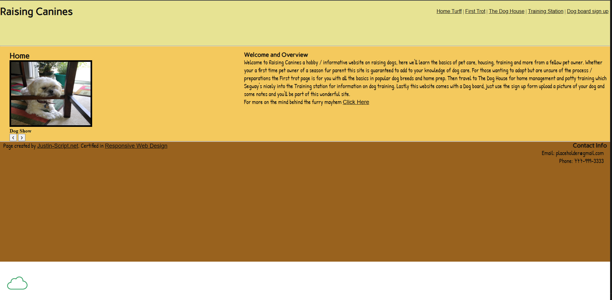

Peer Review 1 - Johnson, Justin

- Submission: Correct Link
- File/Folder Names: Correctly named using proper naming conventions.
-
Design
- The pages font sizing and contrast is sufficient for readability and accessibility. Although I would reconsider the font style "Patrick Hand" for the main body text as it is a handwriting font and can be difficult to read for some users. I would recommend using a more traditional font such as "Lato" or "Libre Baskerville" for the main body text to improve readability.
- Page has site colors and fonts using the standard .css file.
-
CRAP
- Contrast:Minus the body text the website easy to read, the colors contrast well and aid with that. On the paw trot page and home there is a large white box at the bottom that I believe is unintentional and could be removed to improve the overall design and user experience of the website.
- Repetition: The website uses a consistent color scheme and font choices throughout the pages. With exception being the bottom left footer in which the Justin-Script.net and Responsive web design links are in a different font than the rest of the footer text. I would recommend changing the font of those links to match the rest of the footer text for consistency.
- Alignment: Alignment isn't terrible by any means but could be improved. The page seems very "right side heavy". I would suggest adjusting the layout of all the h3 and body text to be more centered in the page to create a more balanced and visually appealing design.
- Proximity: Since the design layout is somewhat unbalanced, I would recommend grouping related elements closer together to improve visual hierarchy and readability.
-
Page has within it:
- Header: Yes
- Main: Yes
- Footer: Yes
- Nav: Yes
- Header has site/brand header with text in an h1: Yes
- Main starts with name of page as an h2 and does not include name of site/brand: Yes
- Page has brand tagline somewhere (make up a slogan and include it on every page in a consistent location): no.
-
Page has footer with
- Menu for user's pages: No.
- Page has html validation button/link and validates: Yes but with some warnings.
- Page has css validation button/link and validates: Yes.
- Notes: Overall I think the website is designed well, I just think it needs a few minor tweaks to help improve the overall design and user experience. I would suggest possibly reconsidering the color pallete to something more visually apealing as while it has good contrast it doesn't necessarily look the best. Try using an LLM to help generate some alternative color schemes if thats a path you would like to explore. I would also suggest changing any and all "handwriting style" fonts like I mentioned above as they can be somewhat difficult to read at times. Like before using an LLM to help generate some alternative font pairings that would look good together and be more readable might work well. Lastly I would suggest adjusting the layout of the pages to be more balanced and less "right side heavy" as it currently is. This could be achieved by centering the h3 and body text more in the page.